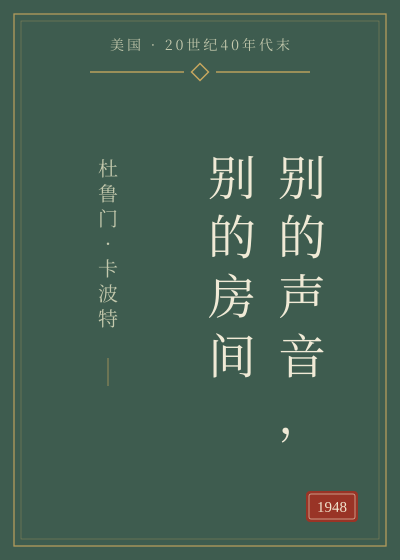
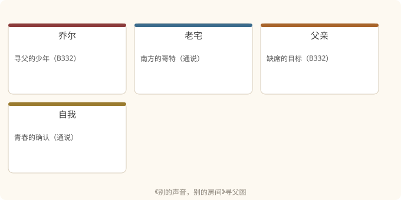

别的声音，别的房间
一、基本信息
| 作者 | 杜鲁门·卡波特 |
|---|---|
| 成书/出版 | 1948年（Britannica B332：Other Voices, Other Rooms (1948)——处女作） Truman Capote — Encyclopaedia Britannica（百科全书） |
| 国别/地区 | 美国 |
| 时代 | 现当代 · 20世纪40年代末 |
| 体裁 | 长篇小说 |
| 语言 | 英语 |

《别的声音，别的房间》寻父图（主题·结构图）
二、创作背景
Britannica（B332）：Other Voices, Other Rooms——'a sensitive, partly autobiographical portrayal of a boy's search for his father'（一个男孩寻找父亲的敏感的、部分自传性的描写）。
Britannica（B332）：卡波特处女作长篇。
题材（通说待核）：少年乔尔在南方老宅的寻父之旅。
三、内容脉络
（通说待核）被弃少年赴南方破败庄园寻父。
（通说待核）'别的声音'：宅中的怪人与自我确认。
四、主要人物表
| 人物 | 身份 | 说明 |
|---|---|---|
| 乔尔·诺克斯 | 寻父少年 | （通说待核，B332未载） |
五、主题与艺术特点
- 寻父与身份（B332：boy's search for his father）。
- 南方哥特（B332 语境——待核）。
- 青春的自我认识（通说待核）。
六、影响与评论
- Britannica：'partly autobiographical portrayal of a boy's search for his father'（B332）。
Truman Capote — Encyclopaedia Britannica（百科全书） - Britannica：卡波特处女作（B332）。
Truman Capote — Encyclopaedia Britannica（百科全书）
七、阅读建议
难点
- 南方哥特氛围。
- 半自传的传记对应。
- 《别的声音，别的房间》中译本（上海译文等——通说待核）。
- 英文原版。
卡波特首作；与《蒂凡尼的早餐》《冷血》对读。
八、待核实
- 乔尔·诺克斯人名核对（B332未载）。
- 1948年出版（Random House说）待核。
- '别的房间'意象细节待核。